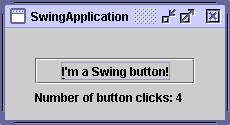
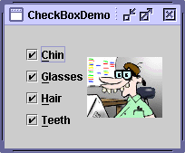

SwingApplicationTopics illustrated in this example:Let’s look at another simple program,
- Look and Feel
- Setting Up Buttons and Labels
- Adding Components to Containers
- Adding Borders Around Components
- Handling Events
SwingApplication. Each time the user clicks the button (JButton), the label (JLabel) is updated.Look and Feel
The following screenshots show the GUI of theSwingApplication, each one with a different look and feel.
 Java look and feel
GTK+ look and feel
Windows look and feel
Mac OS look and feel
Swing allows you to specify which look and feel your program uses--Java, GTK+, Windows, and so on. The code in bold in the following snippet shows you how
Version Note: The appearance of many look and feels changes from release to release. For example, in v1.5 we expect the Java look and feel to use slightly different colors and decorations, though components will stay the same size as before.SwingApplicationspecifies that it should use the Java look and feel:This code essentially says, "I don't care what the user has chosen. Use the cross-platform (Java) look and feel." You can learn more in the section How to Set the Look and Feel.String lookAndFeel = null; ... lookAndFeel = UIManager.getCrossPlatformLookAndFeelClassName(); ... try { UIManager.setLookAndFeel(lookAndFeel); } catch (Exception e) { } ...// Create and show the GUI...Setting Up Buttons and Labels
Like most GUIs, theSwingApplicationGUI contains a button and a label. (Unlike most GUIs, that's about all thatSwingApplicationcontains.) Here's the code that initializes the button:The first line creates the button. The second sets the letter "JButton button = new JButton("I'm a Swing button!"); button.setMnemonic('i'); button.addActionListener(/*...create an action listener...*/);i" as the mnemonic that the user can use to simulate a click of the button. For example, in the Java look and feel, typingAlt-idoes this. The third line registers an event handler for the button click, as discussed later in this section.Here's the code that initializes and manipulates the label:
It's pretty straightforward, except for the line that invokes the...// where instance variables are declared: private static String labelPrefix = "Number of button clicks: "; private int numClicks = 0; ...// in GUI initialization code: final JLabel label = new JLabel(labelPrefix + "0 "); ... label.setLabelFor(button); ...// in the event handler for button clicks: label.setText(labelPrefix + numClicks);setLabelFormethod. That code exists solely as a hint to assistive technologies, such as screen readers, that the label describes the button.Now that you know how to set up buttons, you also know much of what’s needed to set up check boxes and radio buttons, as they all inherit from the
AbstractButtonclass. Check boxes are similar to radio buttons, but by convention their selection models are different. Any number of check boxes in a group--none, some, or all--can be selected. On the other hand, by convention only one button can be selected from a group of radio buttons. The following figures show two programs that use check boxes and radio buttons.You'll get a chance to take a closer look at radio buttons in the section Example Six:
 VoteDialog.Adding Components to Containers
SwingApplicationgroups its label and button in a container (aJPanel) before adding the components to the frame. Here’s the code that initializes the container:The first line creates the container and assigns it a layout manager--an object that determines the size and position of each component added to the container. The codeJPanel panel = new JPanel(new GridLayout(0,1)); panel.add(button); panel.add(label); panel.setBorder(BorderFactory.createEmptyBorder(...));new GridLayout(0,1)creates a layout manager that forces the container's contents to be displayed in a single column, with every component having the same size.The next two lines add the button and the label to the container. The last line adds a border to it. We'll discuss the border in the next section.
Layout management concepts and individual layout managers are covered in Laying Out Components Within a Container.
Adding Borders Around Components
If you take another look at the snapshot ofSwingApplication, you'll notice that there is extra space surrounding theJPanelon all four edges.Here's the code that adds a border to the panel: The code creates and sets a border that provides some empty space around the container's contents--30 extra pixels on the top, left, and right and 10 extra pixels on the bottom. Borders are a feature thatpane.setBorder(BorderFactory.createEmptyBorder( 30, //top 30, //left 10, //bottom 30) //right );JPanelinherits from theJComponentclass. ABorderobject isn't aJComponent; instead, it's used by one or moreJComponents to paint the component’s edges. You can learn more in How to Use Borders.Handling Events
Every time the user types a character or pushes a mouse button, an event occurs. Any object can be notified of the event. All the object has to do is implement the appropriate interface and be registered as an event listener on the appropriate event source.
SwingApplicationclass implements an event handler for button clicks (action events). Here’s the relevant code:Every event handler requires three pieces of code:public class SwingApplication implements ActionListener { ... JButton button = new JButton("I'm a Swing button!"); button.addActionListener(this); .... public void actionPerformed(ActionEvent e) { numClicks++; label.setText(labelPrefix + numClicks); } }In general, to detect when the user clicks an onscreen button (or does the keyboard equivalent), a program must have an object that implements the
- In the declaration for the event handler class, one line of code specifies that the class either implements a listener interface or extends a class that implements a listener interface. For example:
public class MyClass implements ActionListener {- Another line of code registers an instance of the event handler class as a listener on one or more components. For example:
someComponent.addActionListener(instanceOfMyClass);- The event handler class has code that implements the methods in the listener interface. For example:
public void actionPerformed(ActionEvent e) { ...//code that reacts to the action... }ActionListenerinterface. The program must register this object as an action listener on the button (the event source), using theaddActionListenermethod. When the user clicks the onscreen button, the button fires an action event. This results in the invocation of the action listener'sactionPerformedmethod (the only method in theActionListenerinterface). The single argument to the method is anActionEventobject that gives information about the event and its source.Swing components can generate many kinds of events. The following table lists a few examples.
Some Events and Their Associated Event Listeners Act that Results in the Event Listener Type User clicks a button, presses Enter while typing
in a text field, or chooses a menu itemActionListenerUser closes a frame (main window) WindowListenerUser presses a mouse button while the cursor is
over a componentMouseListenerUser moves the mouse over a component MouseMotionListenerComponent becomes visible ComponentListenerComponent gets the keyboard focus FocusListenerTable or list selection changes ListSelectionListenerAny property in a component changes such as
the text on a labelPropertyChangeListenerTo learn more about how to detect events from a particular component, refer to each component's how-to section in Using Swing Components.
Note: Event-handling code executes in a single thread, the event-dispatching thread. This ensures that each event handler finishes execution before the next one executes. For instance, theactionPerformedmethod in the preceding example executes in the event-dispatching thread. Painting code also executes in the event-dispatching thread. Therefore, event-handling code should execute quickly so that the program’s GUI stays responsive. If an event takes too long to execute, the GUI will freeze--that is, it won’t repaint or respond to mouse clicks. Writing Event Listeners has for more information.